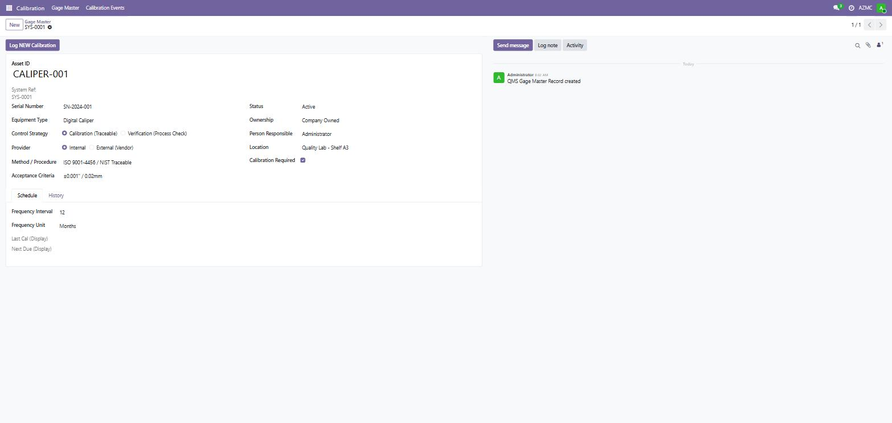
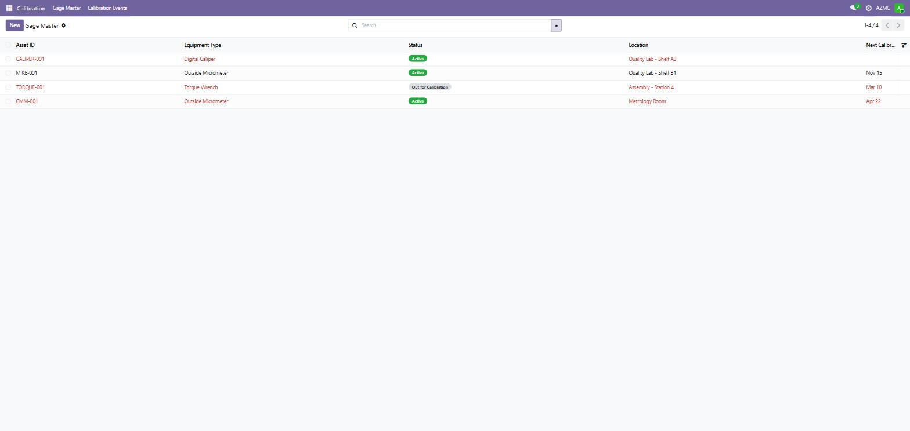
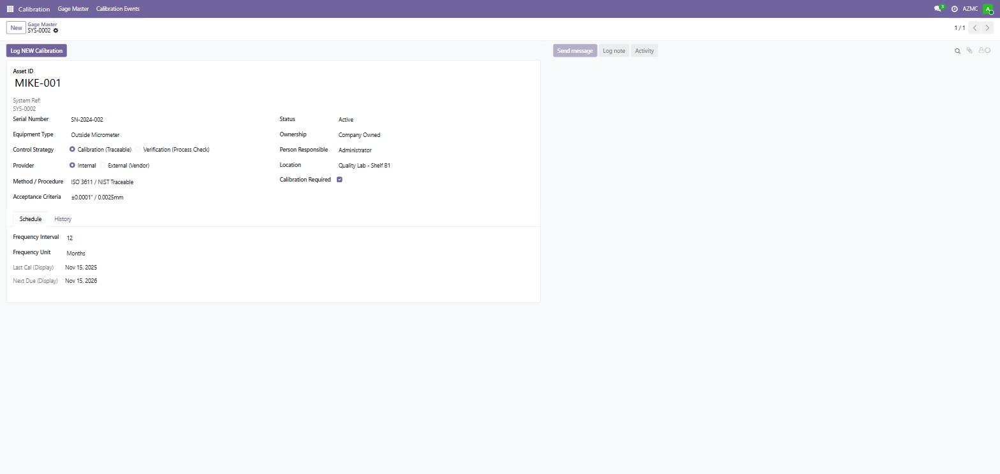

ISO 9001 IATF 16949 AS 9100D Odoo 19.0 OPL-1 Licensed
QMS Calibration is a complete gage and instrument calibration management system built natively in Odoo. Designed for manufacturers, aerospace suppliers, and automotive companies that must maintain a calibrated measurement system under ISO 9001, IATF 16949, and AS 9100D — without the cost of standalone metrology software.
Built to satisfy the measurement system and calibration control clauses of all three major quality management standards:
Manage every measurement device in your facility from a single Gage Master register. Log calibration events with certificate numbers, results, and technician records. The system automatically calculates the next due date based on your calibration frequency.
Track each gage through its full calibration lifecycle with status-driven workflow:
Central register for all measurement devices. Track Asset ID, serial number, equipment type, control strategy, and location in one place.
Set calibration frequency in days, months, or years. Next due date is automatically computed from the last calibration date and frequency.
Automated scheduled action sends reminder emails to the responsible person at 30, 15, and 7 days before calibration is due.
Full calibration history per gage including certificate number, calibration date, provider, pass/fail result, and technician name.
Three security groups: Calibration User, Calibration Manager, and Calibration Admin. Controls who can create, log events, and manage equipment types.
Supports both internal (in-house) and external (vendor) calibration strategies. Track vendor certificate numbers directly on the event record.
Generate a PDF calibration record for each event — suitable for audit evidence and attaching to physical gages.
Configurable equipment type lookup (Micrometer, Caliper, Gauge Block, CMM, etc.) with duplicate-prevention validation.
| Field | Description |
|---|---|
| Gage Control Number | Auto-assigned unique identifier from sequence (e.g. GAG-0001) |
| Asset ID Number | Company asset tag — forced uppercase, duplicate-checked |
| Serial Number | Manufacturer serial number — duplicate-checked |
| Equipment Type | Configurable type from managed lookup list |
| Control Strategy | Calibration (Traceable) or Verification (Process Check) |
| Provider | Internal or External (Vendor) |
| Ownership | Company, Employee, or Customer Owned |
| Status | Active / Out for Calibration / Out of Service / Inactive |
| Person Responsible | Odoo user assigned as calibration owner |
| Location | Physical location of the gage |
| Calibration Frequency | Interval and unit (days / months / years) |
| Last Calibration Date | Date of most recent completed calibration |
| Next Calibration Due Date | Auto-computed from last date + frequency |
| Acceptance Criteria | Specification or tolerance used to accept/reject |
| Method / Procedure | Reference to calibration procedure or standard |
| Field | Description |
|---|---|
| Gage | Linked gage master record |
| Calibration Date | Date calibration was performed |
| Calibrated By Type | Internal technician or external vendor |
| Calibrated By (User) | Odoo user if internal calibration |
| Vendor Name | Calibration lab or vendor name if external |
| Certificate Number | Cal lab certificate or report number |
| Result | Pass / Fail / Conditional |
| Notes | Free-text notes or out-of-tolerance comments |
| State | Draft / Confirmed |
Gage Form View — new gage entry with asset ID, equipment type, control strategy, acceptance criteria and calibration schedule:

Gage Master List — list view showing all gages with status badges, locations, and upcoming calibration due dates:

Gage Record with Calibration Schedule — saved gage showing Last Cal and Next Due dates auto-computed from frequency settings:

Most manufacturers track calibration in spreadsheets or disconnected tools. This module brings your entire calibration program into Odoo — with automated reminders, full event history, and audit-ready PDF reports — eliminating the risk of missed calibrations that could jeopardize your ISO, IATF, or AS9100 certification.
Published by T&M Consulting — Quality Management Systems for Odoo